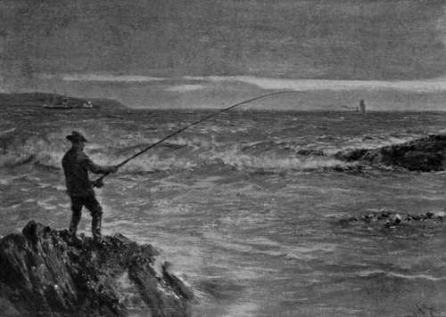

Introductory. Charts, Tides, Etc. Part 6
Description
This section is from the book "Sea Fishing", by John Bickerdyke. Also available from Amazon: Sea Fishing.
Introductory. Charts, Tides, Etc. Part 6
1 A nautical mile is about 260 yards longer than a land mile. The knots on the log line are 50 2/3 feet apart. That is to say, there would be 120 of them in a mile of line. Thus, as there are 120 half-minutes in an hour, the distance between two knots is in the same proportion to a mile as half a minute is to an hour. Therefore, the number of knots which run off the reel in half a minute is equivalent to the number of miles per hour the vessel is running. Patent logs are superseding the old knotted log line.
That a Welshman should decline a hundred pounds — assuming it had been offered him—for the temporary use of a bucket, was odd. The next day I ascertained the reason of the old man's apparent eccentricity. One day, when beating about in Caldy Roads, he sighted a ship which was flying a signal for a pilot. There was a stiff breeze blowing, and nothing more is required to create a big sea off the Point. But the lugger was staunch, and her skipper had often been through the race before and thought little of it. However, this time he shipped a big sea which half filled the boat, and, to his horror, found there was absolutely nothing on board with which to empty her. The little vessel, though quite large enough, had no pump, and the bucket had been left behind. She all but foundered. Hence the extraordinary value placed upon the ship's bucket.
A good deal of fishing is carried on from reefs of rocks which are exposed at low water or otherwise ; and it frequently happens that towards the end of the reef the rocks are rather higher than in the centre. Thus anyone fishing from the end rock, which will, as likely as not, be the best spot, is liable to be cut off from the land as the tide rises. Not a few lives have been lost from this cause, so I venture to sound a note of warning.
Occasionally we hear of people being swept from rocks by waves of unusual height. There was a very sad case of this kind at Filey, which, I believe, is recorded on a tablet fixed in the cliff side. A pathway is cut in the rock, far above high-water mark, but some persons who were walking along it when, so I was told, the water was low, were swept from it by an extraordinary wave. I heard of a similar case in Ireland, at Kilkee, and therefore make the suggestion that anyone fishing from rocky reefs during a heavy swell should keep his eyes open for marine eccentricities of this kind. Of course, anglers do not fish from rocks in very rough weather, but on the lee side of headlands there are sometimes eddies which are fishable even in half a gale.
But to return to our tides. Not only should the ways of the tidal currents be learnt so far as they have bearing on the catching of fish, but they will repay some slight study in connection with the journeyings to and from the fishing ground. It is obviously an unwise thing, at a place where the tidal currents run strongly, to arrange a fishing trip so that at the end of the day one has to beat back against tide and wind. Always manage, if possible, to have the tide with you on the homeward voyage, even if there is a fair wind. There is nothing more uncertain than the weather in this part of the world (that is why it is such a common and useful topic of conversation), and it does not follow that because there is a fine south-westerly breeze in the morning, when we set sail, it will continue to blow in the same direction, or at all, in the evening. If the wind drops towards night, as it very often does, if the little vessel is too heavy to row, and the tide is against us, what is to be done ? Obviously nothing but to wait for the turn of the tide or the return of the breeze. As this wait may be of some duration, to have a reasonable supply of food and water on board when going more than a mile or two from land is always a wise thing. I was once myself reduced to considering whether there was any satisfaction to be obtained out of the end of a composite candle, supposing my hunger increased, for that was all we had on board. Water-barrels therefore, in my opinion, should always be carried on expeditions made under sail, and if there are a couple of loaves placed on board to meet any emergency, so much the better. It is wonderful how good plain water and dry bread taste after a long fast.
Those who are well acquainted with rivers and the peculiar workings of running water will find in the sea—I am not speaking of the ocean, but of the channels between England and France and the like—all the characteristics of a river, on a large scale. There will be slack water at the sides, particularly in bays, strong streams, or races, off headlands, and enormous eddies on one side of such headlands. Where the sea is shallow or narrow the currents will probably be stronger than where it is deep or wide. As in rivers, also, the colour of the water will depend in a great measure on the nature of the bottom. On rocky coasts, such as Cornwall and Wales and the northwest coast of Scotland, the sea is brilliantly clear and takes the most lovely reflected lights, according to the condition of the sky and atmosphere. Where the water is so very bright, and a greenish tinge is noticed, the bottom may be sandy ; a purple colour indicating dark rocks, covered or not with seaweed. This very clear water is by no means favourable to successful sea fishing, except with fine tackle, or on moderately rough days, or at night. After a storm, the water near the coast on which the waves have been beating may be slightly thickened for some days for a mile or more out to sea ; and heavy rains and floods inland will colour the sea for a good many miles on either side of the mouths of great rivers. Of course, where the angler is troubled with over-clear water he should not neglect the additional advantage given him by discoloration caused by flood or storm.
I was very much amused with an amateur sea fisherman at a place I went to with the express object of catching big bass which, that year, were a delusion and a snare ; in fact, they almost seemed to have left the locality for several years past. I had been drawn to the place by some most charming —in fact, almost poetical—descriptions written by a literary angling enthusiast who quite neglected to state that the excellent fishing he described was of some antiquity, and not known in the present day. I met with this brother fisherman—not the enthusiast, but the other—and he told me that if I would be successful with the bass of that particular place, I must wait until I could obtain certain conditions : In the first place, there must be a spring tide; secondly, the northwest wind must have been blowing for three days to colour the water; and, thirdly, I could not hope for success unless the trawlers had been catching skate, whose liver I was to use as bait; and, fourthly, I was to get up exactly an hour before daybreak and sit patiently on a rock, waiting for the bass to come by. I do not doubt for a moment that the advice was very good. It was excellent ; that is unquestionable. Just before daybreak is a deadly time for bass. It is certainly desirable to fish during spring tides ; and no one can dispute the statement that skate's liver is a first-rate bait in many places. But I was tempted to ask how many times in a century I was likely to obtain all these conditions ? Certainly they were not forthcoming during the six weeks or so that I spent at the little fishing town. To show how uncertain is fishing, two years after I had received this excellent advice, bass suddenly reappeared in great numbers, and afforded some of the best sport ever known at that part of the coast.
'Just Before Daybreak Is A Deadly Time For Bass'.
Continue to:
- prev: Introductory. Charts, Tides, Etc. Part 5
- Table of Contents
- next: Introductory. Charts, Tides, Etc. Part 7
Tags
fishing, hooks, bait, fishermen, spanish mackerel, mackerel fishing